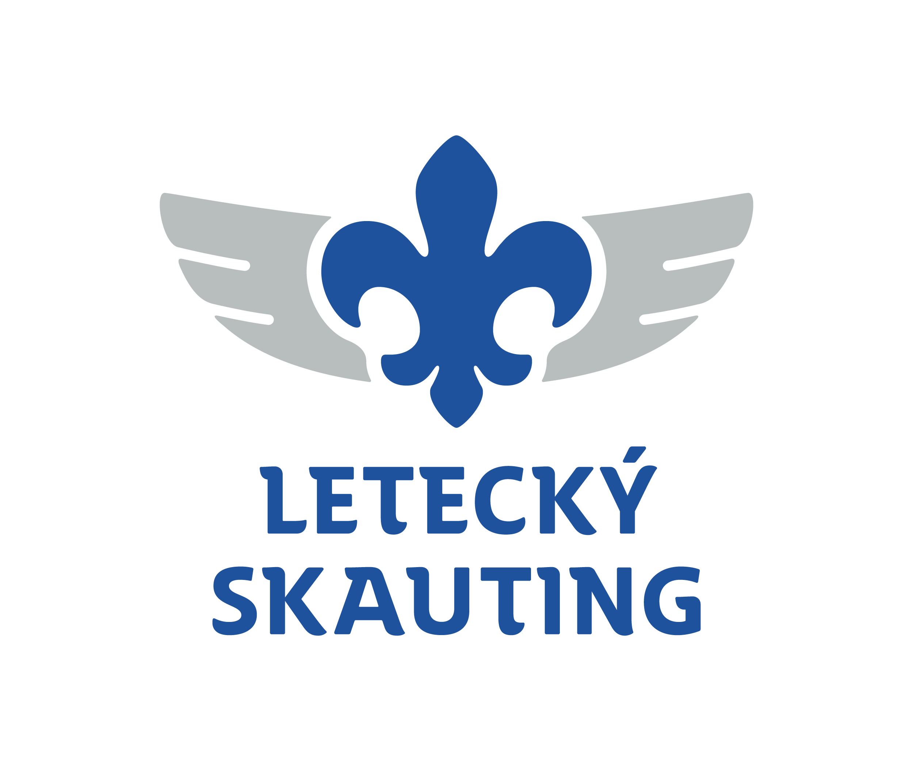

Skóre ▶
Výsledky
Poznej letiště
Najdi 10x správné letiště na slepé mapě
Velká - mezinárodní
Střední - řízená
Malá - severní Čechy
Malá - západní Čechy
Malá - jižní Čechy
Malá - Morava a Slezsko
Ultralehká - SLZ
Radionavigační body - VOR
Zakázané prostory - LKP
Omezené prostory - LKR
Vojenské prostory - LKTRA
Objevování - zobrazit názvy
Pilotní režim - pouze ICAO kód
VŠECHNO - ne jen 10x
Hrát
Smazat postup
Kolo dokončeno
Procvičit chybné
Hrát znovu
